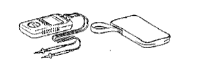
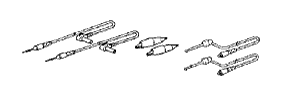

СТЕКЛО НЕОПУСКНОЕ (для 3-дверной модели) > СНЯТИЕ > Подготовка

| Фирменный герметик для ветровых стекол компании Тойота или аналогичный |
| Герметик | - |
| Щетка | - |
| Съемник фиксаторов | - |
| Нож | - |
| Струнная проволока | - |
| Лист пластика | Для предотвращения повреждения поверхности |
| Скребок | - |
| Шприц для герметика | - |
| Панель из вспененного материала | - |
| Вакуумная присоска | - |
| Лента | Для предотвращения повреждения поверхности |
| Динамометрический ключ | - |
| Деревянный брусок или аналогичный предмет | Для закрепления обоих концов струнной проволоки |
 | 09061-1C300 | Комплект съемников молдингов | |
 | (09061-1C340) | Съемник молдингов D | |
|  | 09082-00040 | Электрический диагностический прибор TOYOTA | |
|  | (09083-00150) | Комплект проводов для диагностического прибора |